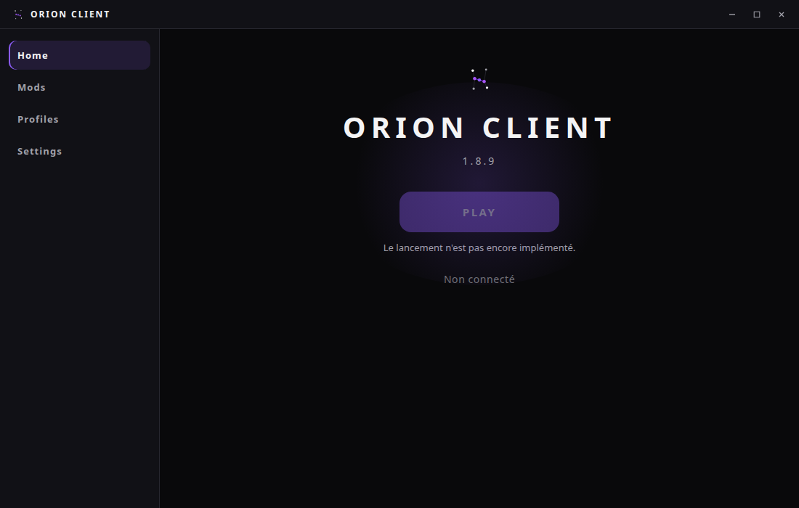

ORION CLIENT
A launcher and client for Minecraft: Java Edition 1.8.9
Orion Client is a desktop launcher (Windows, macOS, Linux) that installs and starts Minecraft: Java Edition 1.8.9 with Forge and the Orion mod, which adds a customizable HUD, quality-of-life modules and profiles.
In active development
What it does
- Downloads the official Minecraft 1.8.9 files, libraries and assets from Mojang's servers and verifies their hashes.
- Installs Forge 1.8.9 and the Orion mod, then starts the game with a Java 8 runtime.
- Lets players manage profiles, mods, memory settings and an in-game HUD editor.
How Microsoft sign-in is used
Orion Client uses the official Microsoft account sign-in so that only players who own Minecraft: Java Edition can play. The flow is the standard one:
- The player signs in with their Microsoft account in Microsoft's own sign-in page.
- The launcher exchanges the token with Xbox Live and XSTS.
- It calls the Minecraft services to log in, check game ownership and read the player profile (username, UUID, skin).
Tokens are stored only on the player's computer, encrypted with the operating system's secure storage. They are sent only to Microsoft, Xbox Live and Minecraft services, never to third parties. The player can sign out at any time, which deletes the stored tokens.
Contact
Developer: wuzax on GitHub